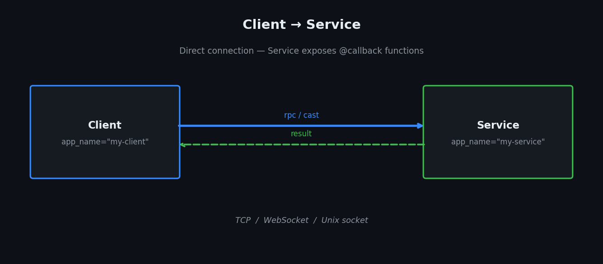
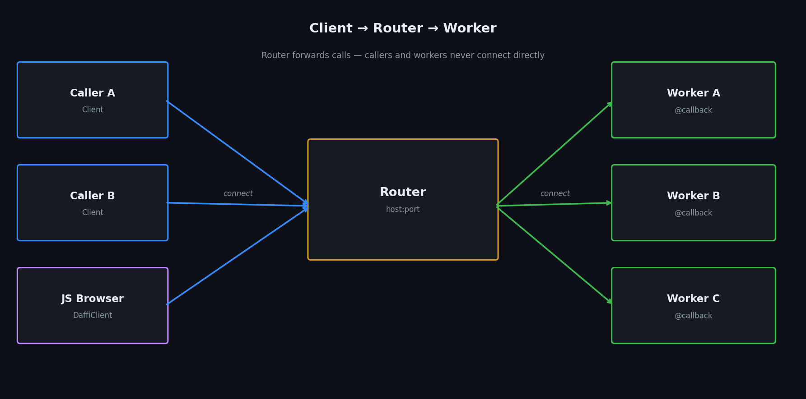
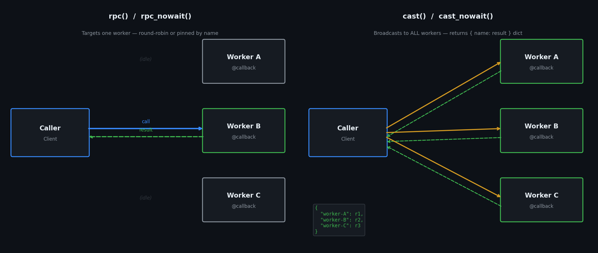

Architecture¶
daffi supports two network topologies. Choose based on your deployment needs.
Both Service and Client can expose @callback functions
The @callback decorator is not tied to a specific class — any node type can register
remote-callable functions. The topology you choose determines how those callbacks are
reached and who is expected to expose them:
| Topology | Who exposes @callback |
Who calls |
|---|---|---|
| Client → Service | Only the Service |
Clients (pure callers) |
| Client → Router → Worker | Any Client (workers, callers, or both) |
Any other connected Client |
In the Router topology a "worker" is simply a Client that has registered @callback
functions — there is no separate worker class.
Topology 1 — Client → Service¶

A Service listens on a TCP port (or Unix socket) and exposes functions decorated with @callback.
Clients connect to it and call those functions; in this topology Clients are pure callers — they do not expose their own callbacks to the Service.
- The Service is the server; Clients are the callers.
- Multiple Clients can connect to the same Service simultaneously.
# service.py
from daffi import Service, callback
@callback
def process(task: str) -> str:
return f"done: {task}"
svc = Service(host="127.0.0.1", port=6000)
svc.start()
svc.join() # blocks until Ctrl+C / SIGTERM
When to use:
Simple request/response scenarios where one process (the Service) owns the logic and one or more clients consume it.
Topology 2 — Client → Router → Worker¶

A Router is a pure message forwarder. It has no callbacks of its own.
Workers are plain Client instances that connect to the Router and expose @callback functions.
Callers are Client instances that connect to the Router and call those functions.
The Router matches calls to workers — callers and workers never connect directly.
# worker.py
from daffi import Client, callback
@callback
def process(task: str) -> str:
return f"done: {task}"
client = Client(app_name="worker-1", host="127.0.0.1", port=6000)
client.connect()
client.join() # blocks until Ctrl+C / SIGTERM
- Workers can be added, removed, or restarted at runtime.
- The Router load-balances
rpc()calls across all workers that expose the same function (round-robin). cast()fans out to all matching workers simultaneously.
A single process can be both Caller and Worker
There is no restriction on roles. A Client that registers @callback functions (acting as a
Worker) can simultaneously call other workers' functions (acting as a Caller) — all over the
same Router connection. This enables fully bidirectional, peer-to-peer communication without
any extra setup.
When to use:
Scalable / distributed workloads, worker pools, fan-out broadcasting, bidirectional communication between arbitrary nodes.
Key concepts¶
@callback¶
@callback can decorate a plain function or an entire class.
from daffi import callback
from daffi.registry import local
# ── plain function ────────────────────────────────────────────────────────────
@callback
def add(a: int, b: int) -> int:
return a + b
# ── whole class ───────────────────────────────────────────────────────────────
@callback
class MathOps:
def multiply(self, a: int, b: int) -> int: # exported
return a * b
def _helper(self): # skipped — name starts with _
pass
@local
def internal(self): # skipped — @local
pass
When applied to a class daffi instantiates it (no-argument constructor) and registers every
public method as a remote callback. Methods whose names start with _ and methods decorated
with @local are never exported.
rpc vs cast¶

rpc() / rpc_nowait() |
cast() / cast_nowait() |
|
|---|---|---|
| Target | One worker (round-robin or pinned by receiver=) |
All workers that expose the function |
| Returns | Single result (or nothing for _nowait) |
{worker_name: result} dict (or nothing) |
| Use when | Stateless computation, any worker will do | Fan-out notifications, aggregating results from all workers |
Serialisation¶
daffi supports four wire formats — see Serialization.
| Format | Cross-language | Best for |
|---|---|---|
PICKLE |
No (Python only) | Python dataclasses, Enums, arbitrary objects |
JSON |
Yes | Simple dicts / lists, cross-language |
MSGPACK |
Yes | Binary-efficient alternative to JSON |
OPAQUE |
Yes | Raw bytes, custom encoding |